Identita domu
Nárožní dům Šmeralova náměstí a ulice U Pražské brány na západní straně (Pohřební služba, TABÁK); karty KSPPOP neg. 10.950–10.952 popisují uliční fasádu, nároží z náměstí i celou pravou stranu ulice (250 | 495 | 449). Šířka 25,8 m je zbytek řady po plánových šířkách 449 a 495.
Použité prameny: fotografie cp_250_001 (neg. 10.951 nároží z náměstí, neg. 10.952 uliční fasáda od jihu), cp_250,449,495_002 (neg. 10.950 z náměstí), cp_250,449,495_001 (z věže piaristického kostela, 1974), náčrt střech KSPPOP 250/1, GIS půdorys 330.
Kde je dům na fotografiích
Dům je na snímku v červeném rámečku, sousední domy jsou popsány čísly a každý otvor má ID, podle kterého se počty otvorů kontrolují proti modelu. Kliknutím otevřete větší obrázek.

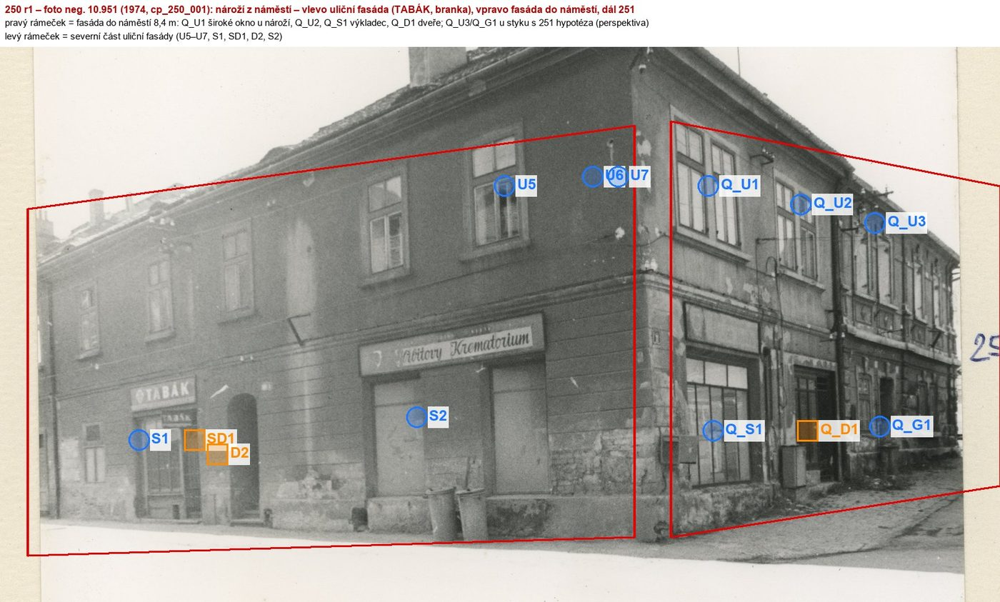
třetí osa u 251 na snímku nejistá (perspektiva, 251 navazuje)

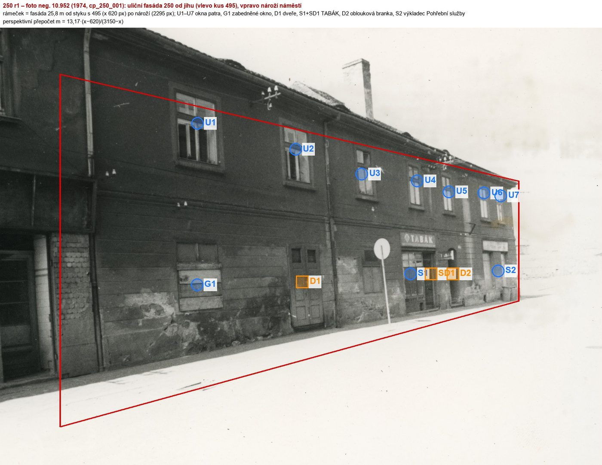
Přílohy v databázi (27)
Všechny přílohy struktury 250 v databázi Libuše, načtené živě 23. 10. 2026 (jen pro čtení) a otevřené. Kliknutím otevřete větší náhled.

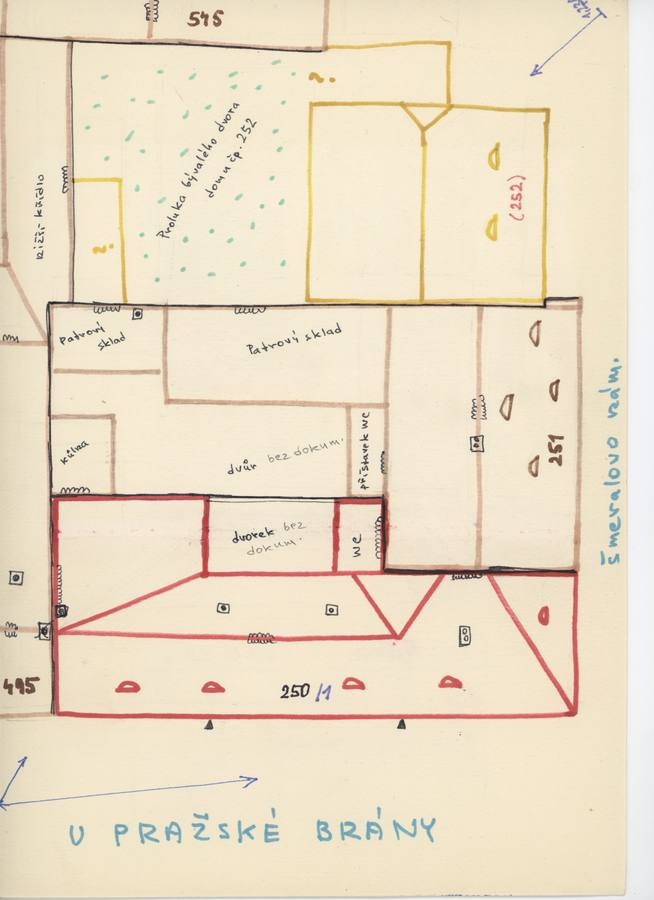
plán / výkres
SHA-256 1d4637bca432…

fotografie
SHA-256 d79e22187f04…

fotografie
SHA-256 d822c17be8ad…

fotografie
SHA-256 c2e5272d70cd…

fotografie
SHA-256 1c5b387ad44c…

fotografie
SHA-256 b460981e4be4…

fotografie
SHA-256 98f542e7e439…

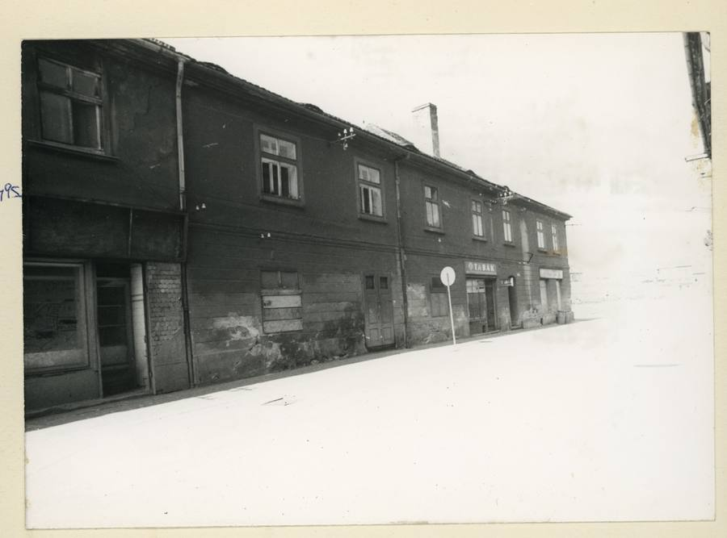
fotografie
SHA-256 54e51427454b…

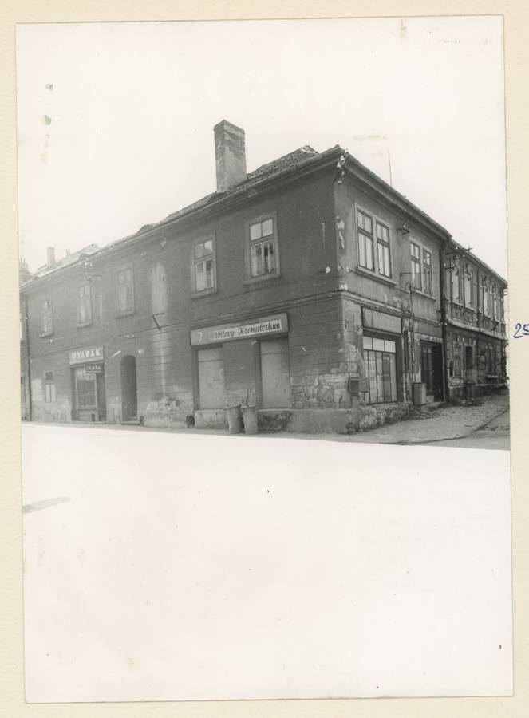
fotografie
SHA-256 27a14f64b219…

archivní karta
SHA-256 c6cf9d080105…

archivní karta
SHA-256 51281aefeef9…

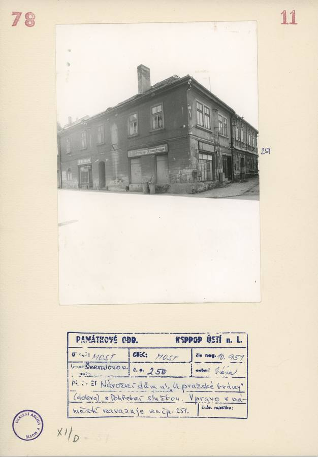
archivní karta
SHA-256 46fb48b2bda8…

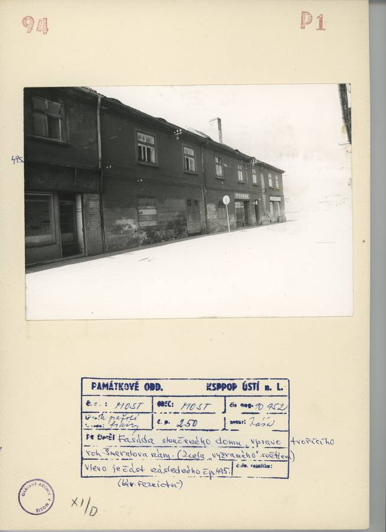
archivní karta
SHA-256 77283147e4b3…

pohlednice
SHA-256 a0652af2f647…

pohlednice
SHA-256 d5cb6339e151…

pohlednice
SHA-256 31632986f1a8…

pohlednice
SHA-256 8ec5eeb5eba8…

kolorovaná odvozenina
SHA-256 525a91a660e3…

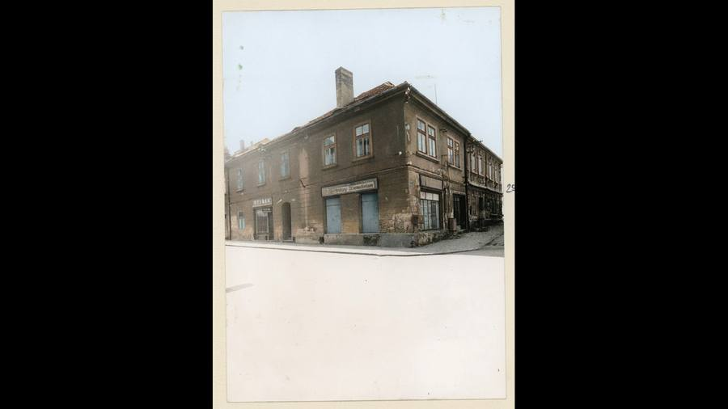
kolorovaná odvozenina
SHA-256 c2dbcd10e64a…

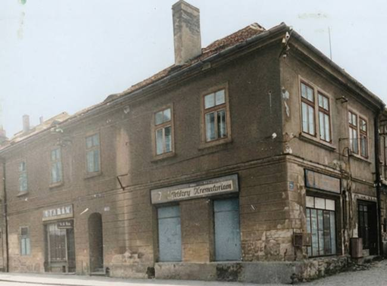
odvozenina bez tagu (kolorovaná / výřez / FRONT)
SHA-256 aed8ddaf2ff1…

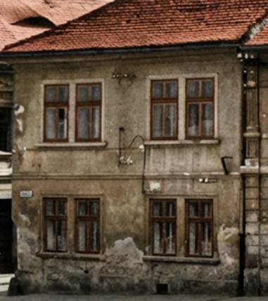
odvozenina bez tagu (kolorovaná / výřez / FRONT)
SHA-256 38065f659042…

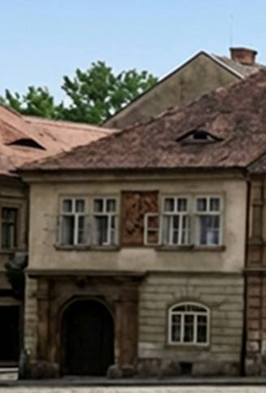
odvozenina bez tagu (kolorovaná / výřez / FRONT)
SHA-256 ef6ba43faa3c…

odvozenina bez tagu (kolorovaná / výřez / FRONT)
SHA-256 d17affde9a45…

odvozenina bez tagu (kolorovaná / výřez / FRONT)
SHA-256 c86b49d87831…

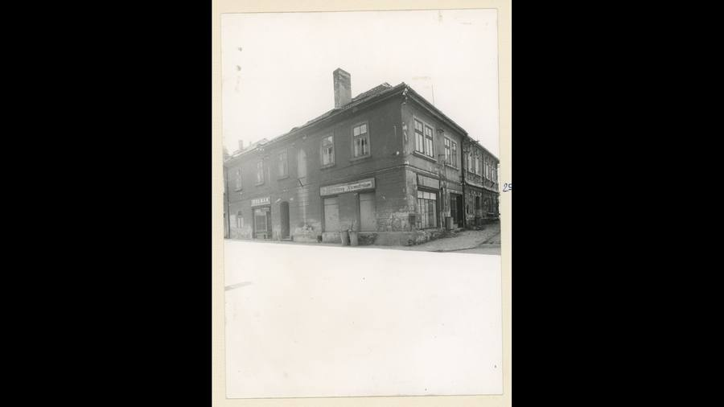
odvozenina bez tagu (kolorovaná / výřez / FRONT)
SHA-256 57f1a33d968d…

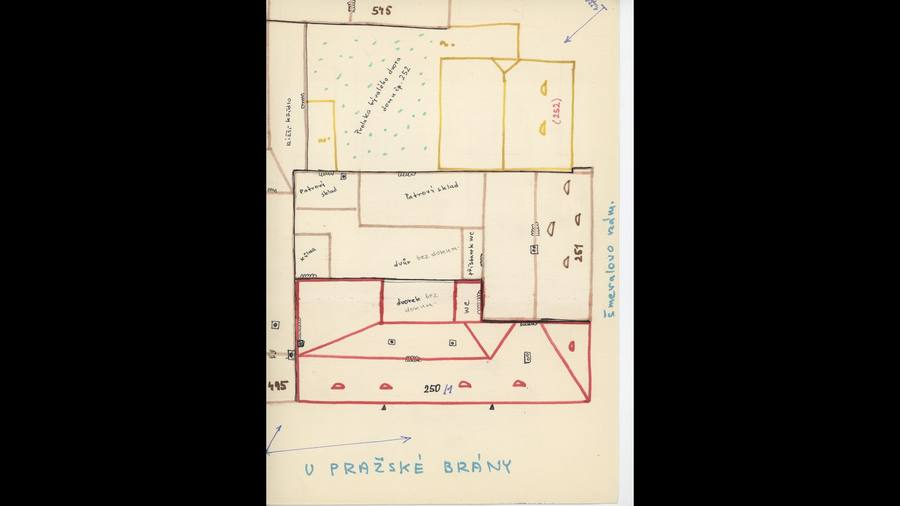
odvozenina bez tagu (kolorovaná / výřez / FRONT)
SHA-256 05413ebeb7f4…

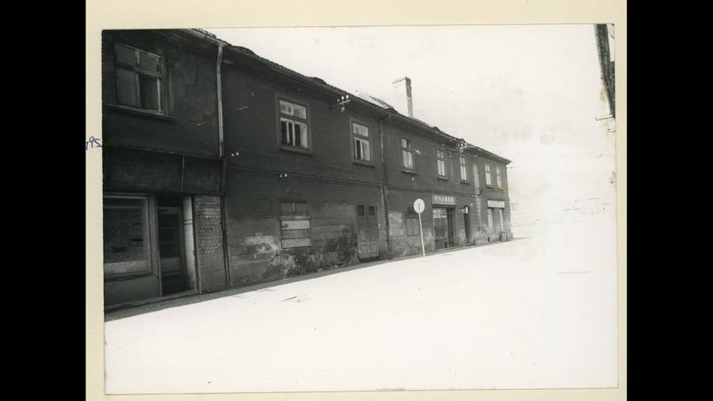
odvozenina bez tagu (kolorovaná / výřez / FRONT)
SHA-256 ce979a4d14e4…
Geometrie
| Revize geometrie | r1 |
|---|---|
| Úsek ulice | Z · západní strana ulice (od náměstí k Fučíkovým sadům) |
| Poloha | GIS budova 330, popisek 250, ulice U Pražské brány |
| Šířka průčelí | 25,77 m |
| Výška okapu | 7,50 m (odhad) |
| Podlaží | 2 |
| Střecha podle pramenů | valbová střecha s hřebenem rovnoběžným s ulicí, čtyři volská oka do ulice (náčrt), tři do náměstí (nemodelována); nízký zadní přístavek s pultovou střechou nad hlubší jižní částí půdorysu GIS |
| Otvory / vikýře v modelu | 19 / 4 |
| Polygonů | 512 |
Kontrolní pohledy

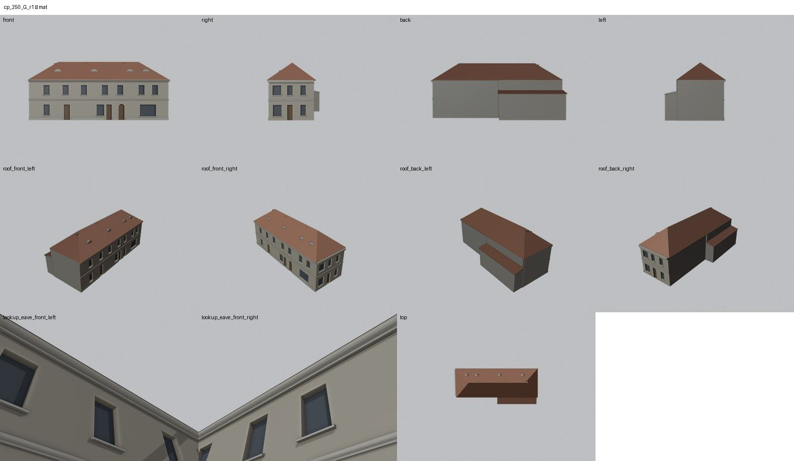

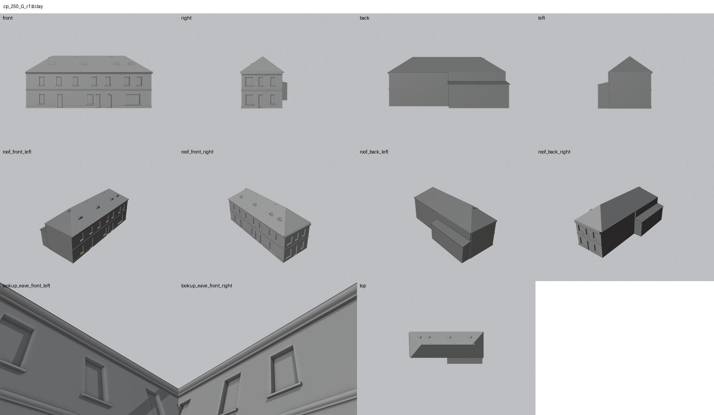

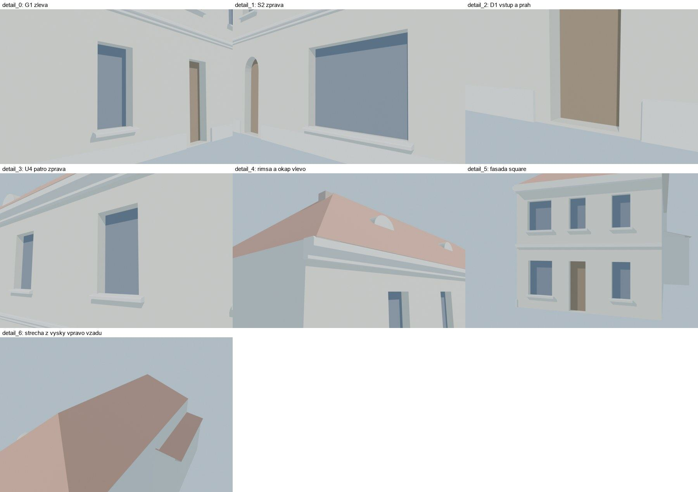
Kontrola modelu
| Brána geometrie (automaticky) | v pořádku |
|---|---|
| Uzavřené podkroví (GLB) | v pořádku: zásahy paprsků 0, nekryté zdivo 0,00 m², střecha nad prázdnem 0,00 m² |
| UV mapování | v pořádku: 0 zkolabovaných ploch z 512 |
| Síť | v pořádku |
| Počty otvorů proti pramenu | souhlasí zčásti (passed_partial) |
| Vizuální kontrola | prošla (Claude (Fable 5.1), 2026-10-28) |
| Kontrola střechy | prošla |
- hlavní průčelí: perspektivní přepočet z neg. 10.952; vzdálený konec ±0,7 m (souhlasí)
- fasáda do náměstí: třetí osa u 251 hypotéza (passed_partial)
Textury
zatím bez textur
Až Codex dodá texturovaný model, objeví se v prohlížeči nahoře volba Textury (Codex).
Hypotézy
Vše níže je model_hypothesis, provisional, locked: false.
- výšky (okap 7,5 m) z poměrů šikmých snímků ±0,3 m; polohy os na vzdáleném konci fasády ±0,7 m
- šířka 25,8 m místo 27,0 m v GIS – důsledek plánových šířek 449 a 495 (kanonický GIS nezměněn)
- hlubší jižní část půdorysu GIS jako přístavek 4,9 m – náčrt střech má zadní křídlo naopak u náměstí
- třetí osa fasády do náměstí u domu 251 je hypotéza
- sklon střechy 40° a hřeben 11,5 m odhad
Technický zápis hypotéz v plánu modelu (revize r1, bez diakritiky)
- výšky (okap 7,5 m, okna patra 4,7–6,5) z poměrů na šikmých snímcích ±0,3 m
- polohy os na vzdáleném (severním) konci fasády ±0,7 m (perspektivní přepočet)
- sklon střechy 42° a hřeben 11,5 m odhad z fotografie 251/náměstí
- konce střechy valby (styk s 495 a nároží) – náčrt neurčuje
- hlubší jižní část půdorysu GIS (x < 12,5 m, 2,5 m za zadní zdí) modelována jako nízký přístavek s pultovou střechou (výška 4,9 m) – náčrt 250/1 kreslí zadní křídlo naopak u náměstí; rozpor GIS × náčrt (kniha nesouladů)
- třetí osa fasády do náměstí a přízemí pod ní hypotéza; 3 volská oka do náměstí nemodelována (valba)
- volská oka do ulice 4 podle náčrtu, polohy odhad
Historie revizí modelu
- r1 28.10.2026: první stavba podle fotografií 1974 a náčrtu střech 250/1; šířka podle plánových šířek sousedů
Soubory
- Geometrie čp. 250, GLB (revize r1)
- Pracovní model: F:\MOST\output\u_prazske_brany_street_claude_2026-10-23\houses\cp250\r1\cp_250_G_r1.blend
- Plán modelu: F:\MOST\output\u_prazske_brany_street_claude_2026-10-23\houses\cp250\geometry_plan.json